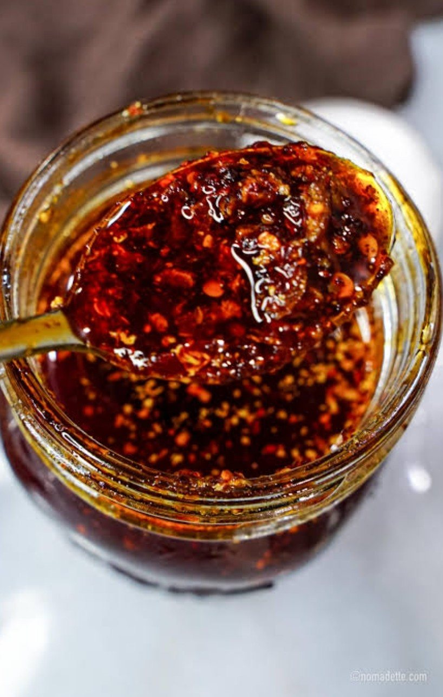

खुर्सानीको तेल
Dried red chilies, golden garlic and whole spices slowly infused into oil, with timur for that Nepali tingle and fresh lemon to finish. Salty and sour, never sweet.

Photo: Nomadette, used with permissionGarlic and fresh lemon sitting in oil at room temperature can grow the bacteria that cause botulism, even in a closed jar. Keep this chili oil cold.
Recipe by Mohan Karki. Top photo by Nomadette, used with permission; pan photo from Mohan's recipe notes. Ingredient photos from Wikimedia Commons under their free licenses. Storage guidance from Michigan State University Extension.